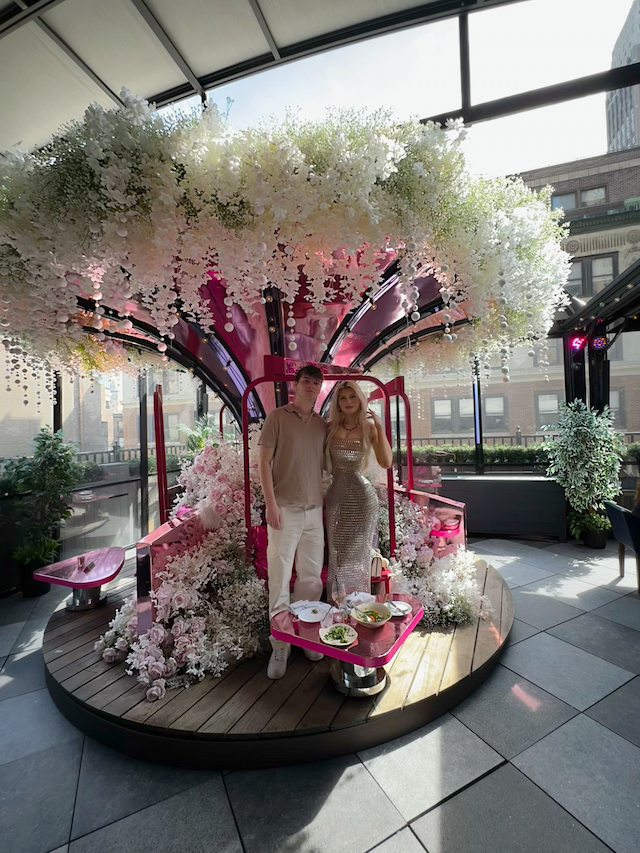
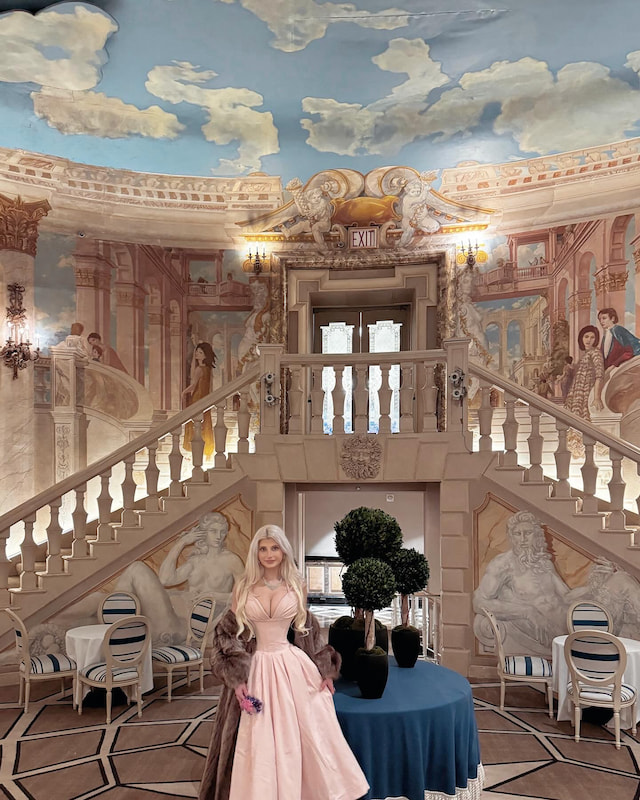

Best resturants

Situated in the heart of Midtown just blocks from New York City’s most popular destinations. enjoy NYC’s largest indoor and outdoor bar perfect for drinks with friends. This all-season rooftop features views of the Empire State Building, multiple bars, live DJs, bar bites, cocktails, and rotating seasonal pop-ups.
The Terrace and Outdoor Gardens is Chef John Fraser's American brasserie located in The Times Square EDITION. From theatergoers and power meetings to dinner parties and big brunches, our all-seasons garden restaurant offers an unexpected oasis for locals and tourists alike, nestled just steps away from New York City's most iconic intersection.

Try delectable bites and delicate sips fit for royalty, or sit down to a lavish dinner of decadent French-American dishes or aromatic Indian cuisine at Perrine. No matter what your tastes may be, find your ideal spread at one of The Pierre’s varied dining destinations, all dedicated to upholding a rich history of celebrated fare in an elegant atmosphere to match.
Reviews
Magic Hour
Rooftop Resturant
5 Stars
I went Sunday brunch. The view was beautiful. They had a moving wheel that they decorate according to the season. The drinks were beautifully garnished.
The Pierre
Hotel Resturant
5 Stars
Very luxurious expeience. Great for anniversaries and birthdays. The staff is very sweet especially luis. I went for my birthday as well as my boyfriends birthday. They brought out a lovely delicate deserts for us, beautifully plated.
The Terrace
Rooftop outdoor garden
5 Stars
The food was on the expensive side. The vibe of the place was chill and artsy. I liked the balcony that overlooked New york City. Great place to go for pictures.